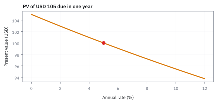

18.1 The Time Value of Money
เงินคนละวันเอามาบวกหรือเทียบกันตรง ๆ ไม่ได้ ต้องย้ายทุกก้อนมาอยู่วันนี้ด้วยอัตราดอกเบี้ยก่อน และคำตอบว่าทางไหนคุ้มกว่าก็เปลี่ยนไปตามอัตรานั้น
บริษัทให้พนักงานที่เกษียณเลือกหนึ่งในสามทาง (A) รับเงินสด \$1,000,000 วันนี้ (B) รับ \$120,000 ทุกสิ้นปีเป็นเวลา 12 ปี (C) รับ \$45,000 สิ้นปีแรก แล้วเพิ่มขึ้นปีละ 1% ไปตลอดกาล หลายคนตอบทันทีว่า B เพราะรวมได้ \$1,440,000 หรือไม่ก็ C เพราะจ่ายไม่มีวันหมด ถ้าเงินฝากที่ไม่มีความเสี่ยงให้ 5% ต่อปี ควรเลือกทางไหน และถ้าให้ 8% ล่ะ
ลองตอบก่อนเปิดเฉลย
ที่ 5% ทาง C มีค่าวันนี้ \$1,125,000 สูงสุด B มีค่า \$1,063,590.20 และ A มีค่า \$1,000,000 ที่ 8% อันดับกลับกันหมด A ชนะที่ \$1,000,000 ส่วน B เหลือ \$904,329.36 และ C เหลือ \$642,857.14 ยอดรวม \$1,440,000 ของ B ไม่มีความหมาย เพราะไม่มีวันไหนที่เงินทั้งก้อนอยู่ในมือพร้อมกัน ส่วน C ที่จ่ายตลอดกาลก็มีค่าจำกัด เพราะเงินที่ยิ่งอยู่ไกลยิ่งมีค่าวันนี้น้อย
ภาพรวมก่อนลงสูตร
ทุกราคาที่เหลือในเล่มเริ่มจากคำถามเดียว เงินที่จะได้ในวันข้างหน้ามีค่าเท่าไรวันนี้ สูตร Black–Scholes คูณ strike ด้วย $e^{-rT}$ ต้นไม้ binomial หารด้วย $1+r$ ทุกครั้งที่ถอยหนึ่งงวด และราคาพันธบัตรก็คือผลบวกของเงินหลายก้อนที่ถูกย้ายมาวันนี้
กลไกมีแค่สองจังหวะ จังหวะแรกย้ายเงินแต่ละก้อนมาวันนี้ด้วยการหารด้วย $(1+r)$ ยกกำลังจำนวนปีที่ต้องรอ จังหวะที่สองจึงค่อยบวก ส่วนที่เหลือของหน้าคือเหตุผลว่าทำไมราคาต้องเป็นค่านี้พอดี (ถ้าไม่ใช่จะมีคนได้เงินฟรี) ทางลัดสำหรับเงินงวดที่เจอบ่อย (annuity และ perpetuity) การหาอัตราที่คำตอบพลิก และการซอยงวดทบต้นจนได้ $e^{rT}$ ที่แบบจำลองเวลาต่อเนื่องใช้ทั้งเล่ม
รูปด้านล่างคือทาง B ทั้ง 12 งวด กรอบเส้นประคือเงินที่จ่ายจริงงวดละ \$120,000 แท่งทึบคือสิ่งที่เงินก้อนนั้นมีค่าวันนี้เมื่อคิดที่ 5% ยิ่งไกลแท่งยิ่งเตี้ย
รูป — เงิน 12 งวดของทาง B ถูกย้ายกลับมาวันนี้
ศัพท์ที่ใช้ในหัวข้อนี้
- Present value (PV) และ future value (FV)
- PV คือมูลค่าวันนี้ของเงินที่จะได้ในอนาคต FV คือยอดที่เงินวันนี้จะโตไปถึงในวันหนึ่งข้างหน้า ทั้งสองมีไว้ย้ายเงินข้ามเวลา เพื่อให้เงินคนละวันเทียบกันได้
- Discount factor และ zero-coupon bond
- discount factor คือตัวคูณที่เปลี่ยนเงิน \$1 ในวันที่ $T$ เป็นเงินวันนี้ มันคือราคาวันนี้ของ zero-coupon bond ซึ่งเป็นสัญญาที่จ่าย \$1 ครั้งเดียวในวันที่ $T$ ถ้าดอกเบี้ยเป็นบวกจะน้อยกว่า 1 เสมอ และเท่ากับ 1 พอดีเมื่อ $T$ คือวันนี้
- Simple interest และ compound interest
- simple interest คิดดอกเบี้ยจากเงินต้นอย่างเดียวทุกงวด compound interest (ดอกเบี้ยทบต้น) คิดจากยอดทั้งก้อนที่รวมดอกเบี้ยงวดก่อนแล้ว ถ้าซอยงวดถี่ขึ้นไม่สิ้นสุดเรียกว่า continuous compounding ได้ตัวคูณ $e^{rT}$
- No-arbitrage
- หลักที่ว่าตลาดไม่ปล่อยให้มีเงินฟรี คือไม่มีพอร์ตที่ได้เงินวันนี้โดยไม่ต้องจ่ายอะไรเลยในอนาคต ใช้บังคับว่าราคาของเงินสดชุดหนึ่งต้องเท่ากับ PV ของมัน
- Annuity และ perpetuity
- annuity คือเงินงวดเท่ากันจำนวนงวดจำกัด เช่นค่าผ่อนบ้านหรือคูปองพันธบัตร perpetuity คือเงินงวดที่จ่ายไม่มีวันจบ ทั้งสองมีสูตรปิดจากอนุกรมเรขาคณิต จึงไม่ต้องบวกทีละงวด
- NPV และ IRR
- NPV (net present value) คือผลรวม PV ของเงินเข้าลบเงินออก ถ้าเป็นบวกแปลว่าคุ้ม IRR (internal rate of return) คืออัตราที่ทำให้ NPV เป็นศูนย์ ใช้สรุปโครงการเป็นตัวเลขเดียว แต่หลอกได้ง่าย
- Effective annual rate (EAR)
- ผลตอบแทนต่อปีจริงหลังรวมผลของการทบต้นระหว่างปีแล้ว ใช้เทียบอัตราที่ประกาศด้วยความถี่ทบต้นต่างกัน
สัญลักษณ์และหน่วย
| สัญลักษณ์ | ความหมาย | หน่วย |
|---|---|---|
| $PV,\ FV$ | มูลค่าวันนี้ และยอดในวันที่ $T$ | ดอลลาร์ |
| $r$ | อัตราดอกเบี้ยหรืออัตราคิดลดต่องวด (ปกติต่อปี) | ต่องวด |
| $T,\ n,\ k$ | ระยะเวลา จำนวนงวด และเลขงวด | ปี, งวด |
| $D(0,T)$ | discount factor จากวันที่ $T$ มาวันนี้ หรือราคา zero-coupon bond | ไม่มีหน่วย |
| $c,\ c_k,\ g$ | เงินต่องวด เงินงวดที่ $k$ และอัตราโตของเงินงวด | ดอลลาร์, ดอลลาร์, ต่องวด |
| $v$ | ตัวคูณคิดลดหนึ่งงวด $1/(1+r)$ | ไม่มีหน่วย |
| $m,\ r_c$ | จำนวนครั้งที่ทบต้นต่อปี และอัตราทบต้นต่อเนื่อง | ครั้งต่อปี, ต่อปี |
ขั้นที่ 1 — ฝาก \$100 ด้วยมือ แล้วหาดอกเบี้ยของดอกเบี้ย
ก่อนมีสูตร ลองฝาก \$100 ที่ 5% ต่อปีทีละปี มีสองวิธีคิดดอกเบี้ย simple interest คิด 5% จากเงินต้น \$100 ทุกปี compound interest คิด 5% จากยอดที่อยู่ในบัญชีตอนนั้น เขียนสิ่งที่ทำซ้ำออกมาเป็นสูตร
ปีที่สองดอกเบี้ย 5% คิดจากยอด \$105 ทั้งก้อน ไม่ใช่จากเงินต้น \$100 ส่วนเกิน \$0.25 คือดอกเบี้ย \$5 ของปีแรกที่ไปงอกดอกเบี้ยอีก 5% นี่คือดอกเบี้ยของดอกเบี้ย
ทุกปีทำเหมือนกัน คือคูณยอดทั้งก้อนด้วย $1+r$ ผ่านไป $T$ ปีจึงคูณ $T$ ครั้ง เขียนรวบเป็นกำลัง $T$ ได้ ช่วงแรกสองวิธีแทบไม่ต่างกัน แต่ที่ 10 ปีแบบทบต้นได้ \$162.89 แบบไม่ทบต้นได้ \$150 ส่วนต่าง \$12.89 คือดอกเบี้ยของดอกเบี้ยที่สะสมมาสิบปี และส่วนนี้โตขึ้นเรื่อย ๆ ตามเวลา
รูป — ไม่ทบต้นเป็นเส้นตรง ทบต้นเป็นเส้นโค้ง
ขั้นที่ 2 — เดินกลับทิศ: discount factor คือราคาของ \$1 ในอนาคต
คำถามในตลาดมักเป็นทิศกลับ คู่สัญญาเสนอจะจ่าย \$105 ในอีกหนึ่งปี วันนี้เราควรจ่ายเท่าไรเพื่อซื้อสัญญานั้น แก้สมการทบต้นหา $PV$ แล้วตั้งชื่อให้ตัวคูณที่ได้
$D(0,T)$ คือราคาวันนี้ของสัญญาที่จ่าย \$1 ในวันที่ $T$ ตลาดเรียกสัญญาแบบนี้ว่า zero-coupon bond ยิ่งรอนานยิ่งถูก และเงินที่ได้วันนี้มีค่า 1 พอดี
ทำไมสัญญาที่จ่าย \$105 ต้องมีราคา \$100 พอดี ถ้าสัญญาจ่ายแค่ \$103 เราเอา \$100 ไปฝากเองได้ \$105 ดีกว่า จึงไม่มีใครยอมจ่ายถึง \$100 (ค่าที่ยุติธรรมคือ $103/1.05=98.10$) ถ้าขายสัญญา \$105 ที่ราคาแค่ \$98 ทุกคนจะแห่ซื้อแทนการฝาก ราคาที่ไม่มีใครได้เปรียบจึงเป็น $FV\cdot D(0,T)$
รูป — ราคาของ \$1 ในอนาคต เมื่ออัตราต่ำและอัตราสูง
ขั้นที่ 3 — เงินหลายก้อน: ย้ายทีละก้อนแล้วค่อยบวก และทำไมราคาต้องเท่านี้
เงินที่มาหลายวันใช้ discount factor คนละตัว เพราะแต่ละก้อนรอไม่เท่ากัน พอย้ายมาวันนี้หมดแล้วจึงบวกกันได้ เพราะอยู่วันเดียวกันแล้ว ตัวอย่างสมมติ พันธบัตรจ่ายคูปอง \$4 ปลายปีที่ 1 และ \$104 (คูปองกับเงินต้น) ปลายปีที่ 2 อัตราตลาด 5% แล้วถามต่อว่าถ้ามีคนขายพันธบัตรนี้ที่ \$97 จะเกิดอะไรขึ้น
เงินสดรวม \$108 แต่มีค่าวันนี้ \$98.14 ต่ำกว่าเงินต้น \$100 เพราะคูปอง 4% ต่ำกว่าอัตรา 5% ที่เงินหาได้เองในตลาด ผู้ซื้อจึงยอมจ่ายต่ำกว่า \$100 เพื่อชดเชย
ทำไมราคาต้องเป็น \$98.14 พอดี ถ้ามีคนขายที่ \$97 ให้ซื้อพันธบัตร แล้วกู้เงินวันนี้สองก้อน ก้อนแรก \$3.81 ที่ครบปีหน้าเป็นหนี้ \$4 พอดี ก้อนที่สอง \$94.33 ที่ครบปีที่ 2 เป็นหนี้ \$104 พอดี คูปองของพันธบัตรใช้หนี้ทั้งสองก้อนได้เป๊ะ อนาคตจึงไม่มีเงินเข้าออกเลย แต่วันนี้ได้เงินกู้ \$98.14 จ่ายค่าพันธบัตร \$97 เหลือ \$1.14 ฟรี ถ้าราคาสูงกว่า PV ก็ทำกลับทิศ คือขายพันธบัตรแล้วฝากเงินสองก้อนไว้จ่ายคูปอง ตลาดจึงไม่ปล่อยให้ราคาห่างจาก PV ได้ เหตุผลแบบนี้ชื่อ no-arbitrage และจะเป็นเครื่องมือหลักของต้นไม้ binomial
รูป — พันธบัตรสองปีที่ถูกย้ายกลับมาวันนี้
ขั้นที่ 4 — ถ้าดอกเบี้ยกู้กับดอกเบี้ยฝากไม่เท่ากัน ราคากลายเป็นช่วง
เหตุผลในขั้นก่อนใช้การกู้และการฝากที่อัตราเดียวกัน ของจริงธนาคารให้กู้แพงกว่าให้ฝาก สมมติฝากได้ $r_L=5\%$ กู้ได้ $r_B=7\%$ แล้วดูสัญญาที่จ่าย \$105 ในหนึ่งปี ทำพอร์ตสองทิศเหมือนเดิม ทิศซื้อสัญญาแล้วกู้ใช้ $r_B$ ทิศขายสัญญาแล้วฝากใช้ $r_L$
ถ้าสัญญาขายต่ำกว่า \$98.13 ให้ซื้อแล้วกู้ \$98.13 ที่ 7% ปีหน้าเงิน \$105 ของสัญญาใช้หนี้พอดี ได้ส่วนต่างฟรีวันนี้ ถ้าขายสูงกว่า \$100 ให้ขายสัญญาแล้วฝาก \$100 ที่ 5% ไว้จ่าย \$105 ปีหน้า ราคาที่ไม่มีใครได้ฟรีจึงไม่ใช่ค่าเดียว แต่เป็นช่วง \$98.13 ถึง \$100 ราคาจริงในช่วงนี้ขึ้นกับว่าใครอยากซื้ออยากขายมากกว่า ตลาดที่ต้นทุนการกู้ของผู้เล่นใหญ่ใกล้กับอัตราฝาก ช่วงจึงแคบจนแทบเป็นจุดเดียว
ขั้นที่ 5 — ห้างวดรายเดือนที่ไม่เท่ากันในตารางคำนวณ
โจทย์ให้อะไรมาบ้าง: เงินรับปลายเดือนที่ 1 ถึง 5 คือ \$55.34, \$55.34, \$63.46, \$32.47 และ \$110.19 อัตรา 4.5% ต่อปีคิดลดรายเดือน อัตราต่องวดจึงเป็น $0.045/12=0.00375$
คำตอบ: \$312.95 (ค่าเต็มคือ 312.9464) ใน Excel ทำได้สองทาง ทางแรกพิมพ์ =NPV(C6, C2:G2) เมื่อช่อง C6 คืออัตรารายเดือน ทางที่สองคิดทีละช่องเป็น =C2/((1+C6)^C1) โดยตรึงช่อง C6 ไว้ แล้วบวกห้าช่อง ซึ่งเป็นการตรวจทางแรกไปในตัว ฟังก์ชัน PV ใช้ไม่ได้เพราะรับเงินงวดได้ค่าเดียว และ NPV ของ Excel ถือว่าช่องแรกเกิดปลายงวดแรก ถ้ามีเงินเข้าออกวันนี้ต้องบวกนอกสูตรเอง
ตรวจเองใน 10 วินาที: เงินไม่คิดลดรวม \$316.80 ต่างจาก PV \$3.85 หรือราว 1.2% เงินก้อนใหญ่อยู่ท้าย เวลารอเฉลี่ยถ่วงด้วยเงินคือ 3.27 เดือน คูณ 0.375% ต่อเดือนได้ราว 1.2% ตรงกัน
ขั้นที่ 6 — เงินงวดเท่ากัน: annuity และ perpetuity จากอนุกรมเรขาคณิต
ทาง B จ่าย 12 งวดเท่ากัน จะบวกทีละงวดก็ได้ แต่ทุกพจน์คือพจน์ก่อนคูณ $v=1/(1+r)$ เป็นอนุกรมเรขาคณิต จึงหาผลบวกปิดได้ด้วยกลคูณแล้วลบ
ตอนลบ พจน์กลางทุกตัวหักล้างกันหมด เหลือแค่หัว $v$ กับท้าย $v^{n+1}$ นี่คือกลที่ทำให้ 12 พจน์ หรือ 360 พจน์ของเงินกู้บ้าน คิดได้ในบรรทัดเดียว
ถ้าจ่ายไม่มีวันจบ $v^n$ เข้าใกล้ศูนย์เพราะ $v$ อยู่ระหว่าง 0 กับ 1 สูตรจึงเหลือ $c/r$ ตรวจด้วยเหตุผลได้ ฝากเงิน $c/r$ ไว้ ดอกเบี้ยปีละ $r\cdot c/r=c$ พอดี จ่ายได้ทุกปีโดยเงินต้นไม่ลด
อีกทางที่ได้สูตรเดียวกันโดยไม่ต้องใช้พีชคณิต annuity $n$ งวดคือ perpetuity ที่เริ่มปีหน้า ลบ perpetuity แบบเดียวกันที่เริ่มปีที่ $n+1$ (ดูรูปด้านล่าง) ตัวหลังคือ perpetuity ธรรมดาที่ถูกเลื่อนไป $n$ ปี จึงมีค่าวันนี้ $(1+r)^{-n}\,c/r$ ผลต่างคือ $\frac cr\big(1-(1+r)^{-n}\big)$ ตรงกับสูตร annuity ข้างบน
รูป — annuity คือ perpetuity สองสายลบกัน
ขั้นที่ 7 — เงินงวดที่โตทุกปี: ทำไมต้องมี $g\lt r$
ทาง C จ่าย $c$ ปลายปีแรก แล้วโตปีละ $g$ งวดที่ $k$ จึงเป็น $c(1+g)^{k-1}$ ดึง $c/(1+r)$ ออกมานอกผลบวก สิ่งที่เหลือเป็นอนุกรมเรขาคณิตที่มีอัตราส่วน $q$
ผลบวก $1+q+q^2+\dots$ เท่ากับ $1/(1-q)$ ก็ต่อเมื่อ $q\lt 1$ คือเงินงวดโตช้ากว่าอัตราคิดลด ($g\lt r$) ถ้า $g\ge r$ งวดไกล ๆ ไม่เล็กลงเลย ผลบวกเป็นอนันต์ และการฝืนแทนสูตรจะได้ตัวเลขติดลบที่ไม่มีความหมาย
สังเกตตัวส่วน $r-g$ ถ้า $r$ กับ $g$ ใกล้กัน ตัวส่วนเล็ก มูลค่าจึงไวต่อ $r$ มาก ที่ 5% ตัวส่วนคือ 0.04 ที่ 8% ตัวส่วนคือ 0.07 มูลค่าจึงหายไปเกือบครึ่ง เราจะเห็นผลนี้ในขั้นถัดไป
ขั้นที่ 8 — ทาง A, B, C ที่ 5% และที่ 8%
โจทย์ให้อะไรมาบ้าง: A คือ \$1,000,000 วันนี้ B คือ \$120,000 สิ้นปีที่ 1 ถึง 12 C คือ \$45,000 สิ้นปีแรกแล้วโต 1% ต่อปีตลอดกาล คิดที่ $r=0.05$ ก่อน แล้วที่ $r=0.08$ จากนั้นดูว่าทำไม C ร่วงแรงกว่า B มาก วิธีวัดคือคิดว่า 12 ปีแรกของ C มีค่าเท่าไร เงินงวดตั้งแต่ปีที่ 13 คือสายเดิมที่โตไปแล้ว $(1+g)^{12}$ และเลื่อนไป 12 ปี มูลค่าจึงเป็น $q^{12}$ เท่าของทั้งสาย
คำตอบ: ที่ 5% อันดับคือ C ชนะ ตามด้วย B แล้ว A ทาง C ชนะทั้งที่งวดแรกเล็กกว่า B เกือบสามเท่า เพราะจ่ายไปเรื่อย ๆ และโตทุกปี ที่ 8% A ไม่ขยับเพราะเป็นเงินวันนี้ B เสีย 15.0% และ C เสีย 42.9% อันดับจึงกลับเป็น A, B, C ที่ 5% มูลค่าของ C มาจาก 12 ปีแรกแค่ 37.3% อีก 62.7% อยู่หลังปีที่ 12 ซึ่งเป็นเงินที่ถูกคิดลดหลายสิบปี อัตราที่ขึ้นนิดเดียวจึงกัดส่วนนั้นหนัก
ตรวจเองใน 10 วินาที: เงินของ B ไม่คิดลดรวม $12(120{,}000)=\$1{,}440{,}000$ การคิดลดตัดออกไป \$376,409.80 หรือ 26% สมเหตุผล เพราะเงินงวดกลางรอราว 6 ปี และ $1.05^{-6}=0.746$
ความไวต่ออัตราแบบนี้มีชื่อเฉพาะ คือ duration ซึ่งเป็นเวลารอเฉลี่ยของเงินถ่วงด้วย PV ทาง B ได้ราว 5.9 ปี ทาง C ได้ 26.25 ปี ยิ่ง duration ยาว ราคายิ่งร่วงแรงเมื่ออัตราขึ้น
รูป — มูลค่าวันนี้ของเงินแต่ละงวดของทาง C
รูป — เงินที่รอแค่ปีเดียวแทบไม่ไวต่ออัตรา

ขั้นที่ 9 — อันดับพลิกที่อัตราไหน
ถ้าคำตอบเปลี่ยนตามอัตรา สิ่งที่ผู้ตัดสินใจควรรู้คืออัตราที่อันดับพลิก จุดที่ C เท่ากับ A แก้สมการตรง ๆ ได้ ส่วนจุดที่ B เท่ากับคนอื่นต้องหาเป็นตัวเลข เพราะ annuity 12 งวดเป็นพหุนามกำลัง 12 ของ $v$ ไม่มีสูตรปิด เราใช้การแบ่งครึ่งช่วง (bisection) ในโค้ดท้ายหน้า คือเริ่มจากช่วงที่ผลต่างเปลี่ยนเครื่องหมาย แล้วตัดครึ่งไปเรื่อย ๆ
อันดับจึงเป็น C, B, A เมื่ออัตราต่ำกว่า 5.30% เป็น B, C, A ระหว่าง 5.30% ถึง 5.50% เป็น B, A, C ระหว่าง 5.50% ถึง 6.11% และเป็น A, B, C เมื่อเกิน 6.11% ระหว่าง 5% กับ 8% อันดับพลิกสามครั้ง คำถาม “ทางไหนดีกว่า” จึงไม่มีคำตอบถ้าไม่บอกอัตรา
ตรวจจุด B เท่ากับ A ด้วยการแทนค่า ที่ 6% B ได้ \$1,006,061.27 มากกว่า A ที่ 6.2% B ได้ \$995,121.25 น้อยกว่า A จุดตัดจึงอยู่ระหว่างสองค่านี้ 6.1104% คือ IRR ของการสละ A เพื่อรับ B ถ้าเงินเราหาผลตอบแทนแบบเดียวกันได้ต่ำกว่านี้ B คุ้มกว่า ถ้าสูงกว่า A คุ้มกว่า
รูป — มูลค่าของสามทางเมื่ออัตราเปลี่ยน
ขั้นที่ 10 — ซอยงวดทบต้นจนต่อเนื่อง: ที่มาของ $e^{rT}$
ธนาคารอาจประกาศ 5% ต่อปีแต่ทบต้นทุกเดือน ($m=12$) หรือทุกวัน ทบ $m$ ครั้งต่อปีคือได้ $r/m$ ต่องวด รวม $mT$ งวด ถ้าให้ $m$ โตไม่สิ้นสุด ตั้ง $u=m/r$ แล้วรูปจะกลายเป็นนิยามของ $e$ อีกทางหนึ่งคือเขียนเป็นสมการเชิงอนุพันธ์ ในช่วงเวลาสั้น $dt$ เงิน $M$ งอกดอกเบี้ย $rM\,dt$
กลอยู่ที่แถวที่สาม ยกกำลัง $mT$ แยกได้เป็น $u$ คูณ $rT$ วงเล็บใน $[\ ]$ คือ $(1+1/u)^u$ ซึ่งเข้าใกล้ $e\approx2.71828$ เมื่อ $u$ โต ใส่ $r=1$ (ดอกเบี้ย 100% ต่อปี) กับ $T=1$ จะเห็นว่า $e$ ก็คือยอดที่ \$1 โตไปถึงเมื่อทบต้นถี่ไม่สิ้นสุด
ทางสมการเชิงอนุพันธ์บอกเรื่องเดียวกันจากอีกมุม อัตราโตของเงินเป็นสัดส่วนกับยอดที่มี แยกตัวแปรแล้วอินทิเกรตสองข้างได้ $\ln M$ เป็นเส้นตรงในเวลา นี่คือเหตุที่แบบจำลองเวลาต่อเนื่องทั้งเล่ม ตั้งแต่ geometric Brownian motion จนถึงสูตร Black–Scholes คิดลดด้วย $e^{-rT}$
ขั้นที่ 11 — \$1,000,000 ในอีก 12 ปี ที่ “5%” หกแบบ
โจทย์ให้อะไรมาบ้าง: เงิน \$1,000,000 ที่จะได้ในอีก 12 ปี อัตราประกาศ 5% ต่อปี ทบต้นปีละ $m$ ครั้ง (1, 2, 4, 12 และ 365 ซึ่งคือจำนวนวันในปีปฏิทิน) และแบบต่อเนื่อง จากนั้นหาอัตราต่อเนื่องที่ให้ผลเท่า 5% รายปีพอดี
คำตอบ: มูลค่าวันนี้คือ \$556,837.42, \$552,875.35, \$550,856.49, \$549,496.18, \$548,834.19 และ \$548,811.64 รายปีกับต่อเนื่องต่างกัน \$8,025.78 ทั้งที่ “อัตรา” เท่ากัน EAR ของรายเดือนคือ 5.1162% ของต่อเนื่องคือ 5.1271% ถ้าอยากได้ผลเท่ารายปี 5% ต้องใช้อัตราต่อเนื่อง 4.8790% ซึ่งให้ PV ของ B เท่าเดิม \$1,063,590.20 ทุกหลัก
ตรวจเองใน 10 วินาที: ทบต้นถี่ขึ้น เงินโตเร็วขึ้น มูลค่าวันนี้จึงต้องลดลงทุกแถว และแถว $m=365$ ต้องใกล้แถวต่อเนื่องมาก ทั้งสองอย่างเป็นจริง
ขั้นที่ 12 — ลองวนในคอมพิวเตอร์: เข้าใกล้ $e$ จากด้านล่าง แล้วพังเมื่อ $n$ ใหญ่เกิน
ลองวน $n$ เป็น 1, 2, 4, 52 (สัปดาห์), 365 (วัน), 8,760 (ชั่วโมงในหนึ่งปี) แล้วคูณสองไปเรื่อย ๆ จนถึง 71,761,920 (8,760 คูณ $2^{13}$) พิมพ์ $(1+1/n)^n$ ออกมา ทุกแถวต่ำกว่า $e$ และเหตุผลพิสูจน์ได้ในไม่กี่บรรทัด จากนั้นลองให้ $n$ ใหญ่ขึ้นอีก
$h$ เริ่มที่ศูนย์และเพิ่มตลอดเมื่อ $x\gt 0$ จึงได้ $\ln(1+x)\lt x$ แทน $x=1/n$ แล้วคูณ $n$ ได้ว่า $\ln$ ของ $(1+1/n)^n$ ต่ำกว่า 1 ค่าจึงต่ำกว่า $e$ ทุก $n$ ที่ $n=1$ ได้แค่ 2 เพราะทบปีละครั้งไม่มีดอกเบี้ยของดอกเบี้ยระหว่างปีเลย
ถ้าเอาค่าประมาณนี้ไปใช้แทน $e$ ในการคิดเงิน \$1 ที่ 5% หนึ่งปี คือ $\big[(1+\frac1n)^n\big]^{0.05}$ ที่ $n=1$ จะได้ $2^{0.05}=1.035265$ ต่ำกว่าของจริง $e^{0.05}=1.051271$ มาก แต่การทบรายวันตรง ๆ $(1+0.05/365)^{365}=1.051267$ ต่างจากต่อเนื่องแค่ \$0.00036 ต่อ \$100
สามแถวท้ายผิดเพราะเลข double เก็บเศษหลังจุดได้ 52 หลักฐานสอง ช่องห่างที่เล็กที่สุดถัดจาก 1 คือ $2^{-52}=2.22\times10^{-16}$ ค่า $1+10^{-15}$ ถูกปัดเป็น $1+1.110223\times10^{-15}$ ผลจึงเป็น $e^{1.110223}=3.035$ และ $10^{-16}$ เล็กกว่าครึ่งช่องจึงถูกปัดทิ้ง เหลือ $1^n=1$ สูตรถูกไม่ได้แปลว่าคำนวณออกมาถูก
รูป — $(1+1/n)^n$ ไต่ขึ้นหา $e$ แล้วพังเพราะการปัดเศษ
ความผิดที่ให้คำตอบผิดแบบเงียบ ๆ
บวกเงินคนละวันตรง ๆ: B ดูเหมือนมีค่า \$1,440,000 แต่ที่ 5% มีค่าวันนี้ \$1,063,590.20 ความต่าง \$376,409.80 คือราคาของการรอ
เลือกด้วย IRR เมื่อเงินสดสลับเครื่องหมายหลายครั้ง: สายเงินสด $(-100,\ +230,\ -132)$ ให้สมการ $132x^2-230x+100=0$ เมื่อ $x=1/(1+r)$ ได้ $x=(230\pm10)/264$ คือ IRR ทั้ง 10% และ 20% NPV เป็นบวกเฉพาะอัตราระหว่างนั้น (ที่ 15% ได้ +0.19 ที่ 5% ได้ −0.68) ตัวเลข IRR ตัวเดียวจึงบอกไม่ได้ว่าโครงการดีไหม และทาง C ที่ไม่มีเงินออกเลยไม่มี IRR ให้หาด้วยซ้ำ การเลือกด้วย NPV ที่อัตราที่ใช้จริงจึงตรงกว่า
ลืมดูว่าจ่ายต้นงวดหรือปลายงวด: สูตรในหน้านี้จ่ายปลายงวด ถ้า B จ่ายต้นปี ทุกงวดเลื่อนเข้ามาหนึ่งปี ต้องคูณ $1.05$ ได้ \$1,116,769.71 เพิ่มขึ้น \$53,179.51 ซึ่งใหญ่พอจะเปลี่ยนการตัดสินใจในหลายกรณี แม้ที่ 5% จะยังต่ำกว่า C อยู่ \$8,230.29
ใส่ $g\ge r$ ในสูตร perpetuity: ถ้า C โต 6% ต่อปีที่อัตรา 5% สูตรให้ $45{,}000/(-0.01)=-\$4.5$ ล้าน ทั้งที่ผลบวกจริงเป็นอนันต์ ตัวเลขติดลบนี้ไม่มีความหมายเลย
พูด “5%” โดยไม่บอกความถี่ทบต้น: ที่ 12 ปี 5% รายเดือนให้ \$549,496.18 ต่อ \$1 ล้าน 5% รายปีให้ \$556,837.42 ต่างกัน \$7,341.24 จากคำพูดเดียวกัน
ใช้ทำอะไรบนโต๊ะจริง
ทุกราคาของพันธบัตร เงินกู้ และ swap คือผลบวกของเงินสดคูณ discount factor แบบพันธบัตรสองปีด้านบน ฝ่ายการเงินบริษัทใช้ NPV ตัดสินโครงการ และทำกราฟแบบสามทาง A, B, C เพื่อบอกผู้บริหารว่าคำตอบพลิกที่อัตราไหน โต๊ะ option คิดลดผลตอบแทนที่คาดด้วย $e^{-rT}$ และทุกสัญญาต้องระบุวิธีนับวันและความถี่ทบต้นเป็นลายลักษณ์อักษร เพราะ “5%” คำเดียวแปลได้หลายค่า
อัตราคิดลดคือผลตอบแทนของทางเลือกที่ดีที่สุดถัดไปซึ่งเสี่ยงเท่ากัน ถ้าเงินงวดแน่นอนเหมือนพันธบัตรรัฐบาล ใช้อัตราพันธบัตรรัฐบาลอายุเดียวกัน และอัตรานั้นต่างกันตามอายุ จึงต้องใช้ discount factor คนละค่าตามเส้น zero rate ถ้าผู้จ่ายอาจผิดนัด ต้องบวกส่วนชดเชยเข้าไป หรือคิดโอกาสผิดนัดตรง ๆ แบบพันธบัตรที่ผิดนัดได้
โจทย์ตรวจความเข้าใจ
1. ฝาก \$2,000 ที่ 6% ต่อปี ทบต้นรายเดือน 3 ปี ได้เท่าไร และ EAR คือเท่าไร
เฉลย
ต่องวด $0.06/12=0.005$ จำนวน 36 งวด $2{,}000(1.005)^{36}=\$2{,}393.36$ EAR คือ $1.005^{12}-1=6.1678\%$ สูงกว่า 6% ที่ประกาศ เพราะดอกเบี้ยรายเดือนไปงอกต่อระหว่างปี
2. หุ้นตัวหนึ่งคาดว่าจะจ่ายปันผล \$3 ปีหน้า แล้วโต 2% ต่อปีตลอดไป ถ้าผลตอบแทนที่ต้องการคือ 7% หุ้นมีค่าเท่าไร และถ้าผลตอบแทนที่ต้องการขึ้นเป็น 8% ล่ะ
เฉลย
ใช้สูตร perpetuity ที่โต $c/(r-g)$ ได้ $3/(0.07-0.02)=\$60$ และ $3/(0.08-0.02)=\$50$ ลดลง 16.7% จากอัตราที่ขึ้นแค่ 1 จุด เพราะมูลค่าของหุ้นแบบนี้อยู่ไกลเหมือนทาง C
3. โครงการจ่าย \$1,000 วันนี้ รับ \$600 ปลายปีที่ 1 และ \$600 ปลายปีที่ 2 NPV ที่ 10% เท่าไร IRR เท่าไร และถ้ามีคนเสนอซื้อสิทธิ์รับเงินสองก้อนนี้ที่ \$1,100 ควรขายไหม
เฉลย
NPV $=-1{,}000+600/1.1+600/1.21=-1{,}000+545.45+495.87=\$41.32$ คุ้ม IRR ให้ $x=1/(1+r)$ แก้ $600x^2+600x-1{,}000=0$ ได้ $x=(-1+\sqrt{1+20/3})/2=0.884437$ จึง $r=1/x-1=13.07\%$ สูงกว่า 10% ตรงกับที่ NPV เป็นบวก สิทธิ์รับเงินสองก้อนมีค่าวันนี้ $545.45+495.87=\$1{,}041.32$ ที่ 10% ข้อเสนอ \$1,100 สูงกว่า จึงควรขาย ได้มากกว่าการถือไว้ \$58.68 ในมูลค่าวันนี้
คำนวณซ้ำด้วย JavaScript
เปิดดูโค้ด
const {pow, exp, log} = Math;
// Present value of flows[k] paid at the end of period k + 1, at rate r per period.
const pv = (flows, r) => flows.reduce((s, c, k) => s + c / pow(1 + r, k + 1), 0);
// Level annuity and growing perpetuity (first payment after one period).
const annuity = (c, r, n) => r === 0 ? c * n : c * (1 - pow(1 + r, -n)) / r;
const growing = (c, r, g) => {
if (!(g < r)) throw new RangeError('g must be below r');
return c / (r - g);
};
// Discount factor for T years at annual rate r, m times a year (Infinity = continuous).
const discount = (r, T, m) => m === Infinity ? exp(-r * T) : pow(1 + r / m, -m * T);
// Root of f on [lo, hi] by bisection; f must change sign.
function bisect(f, lo, hi) {
let flo = f(lo);
for (let k = 0; k < 200; k++) {
const mid = (lo + hi) / 2, fm = f(mid);
if (flo * fm <= 0) hi = mid; else { lo = mid; flo = fm; }
}
return (lo + hi) / 2;
}
const offer = r => ({A: 1e6, B: annuity(120000, r, 12), C: growing(45000, r, 0.01)});
const eN = n => pow(1 + 1 / n, n);
console.log({
deposit10: [100 * (1 + 0.05 * 10), 100 * pow(1.05, 10)], // 150, 162.89
df: [1, 2, 10].map(T => discount(0.05, T, 1)), // 0.952381 ...
bond: pv([4, 104], 0.05), freeMoneyAt97: pv([4, 104], 0.05) - 97,
bounds: [105 / 1.07, 105 / 1.05], // 98.13 .. 100
excelPV: pv([55.34, 55.34, 63.46, 32.47, 110.19], 0.045 / 12), // 312.95
at5: offer(0.05), at8: offer(0.08),
cFirst12: growing(45000, 0.05, 0.01) * (1 - pow(1.01 / 1.05, 12)),
cross: {
BC: bisect(r => offer(r).B - offer(r).C, 0.02, 0.2),
CA: bisect(r => offer(r).C - 1e6, 0.02, 0.2),
BA: bisect(r => offer(r).B - 1e6, 0.02, 0.2)
},
freq: [1, 2, 4, 12, 365, Infinity].map(m => 1e6 * discount(0.05, 12, m)),
rc: log(1.05), earMonthly: pow(1 + 0.05 / 12, 12) - 1, earCont: exp(0.05) - 1,
eTable: [1, 2, 4, 52, 365, 8760, 71761920].map(eN),
roundoff: [1e12, 1e15, 1e16].map(eN), // 2.718523, 3.035, 1
irrTrap: [bisect(r => -100 + pv([230, -132], r), 0.05, 0.15),
bisect(r => -100 + pv([230, -132], r), 0.15, 0.3)], // 10%, 20%
annuityDue: annuity(120000, 0.05, 12) * 1.05,
exercises: {
fv: 2000 * pow(1.005, 36), ear: pow(1.005, 12) - 1,
stock: [growing(3, 0.07, 0.02), growing(3, 0.08, 0.02)],
npv10: -1000 + pv([600, 600], 0.10),
irr: bisect(r => -1000 + pv([600, 600], r), 0.05, 0.3)
}
});สิ่งที่ควรตอบได้หลังอ่าน
- ย้ายเงินวันที่ $T$ มาวันนี้ด้วย $D(0,T)=(1+r)^{-T}$ ซึ่งคือราคา zero-coupon bond และเงินหลายก้อนต้องย้ายทีละก้อนก่อนบวก
- อธิบายได้ว่าทำไมราคาต้องเท่ากับ PV: ถ้าพันธบัตร \$98.14 ขายที่ \$97 ซื้อแล้วกู้ชนคูปองได้ \$1.14 ฟรี และถ้าอัตรากู้กับฝากต่างกัน ราคากลายเป็นช่วง
- สร้างสูตร annuity, perpetuity และ perpetuity ที่โตได้จากอนุกรมเรขาคณิต และบอกได้ว่าทำไมต้องมี $g\lt r$
- ที่ 5% C ชนะที่ \$1,125,000 ที่ 8% A ชนะ อันดับพลิกที่ 5.30%, 5.50% และ 6.11% และเงินที่อยู่ไกลไวต่ออัตรามากกว่า (C เสีย 42.9% B เสีย 15.0%)
- “5%” ต้องมาพร้อมความถี่ทบต้น รายปีกับต่อเนื่องต่างกัน \$8,025.78 ต่อ \$1 ล้านที่ 12 ปี และ $e^{-rT}$ มาจากการซอยงวดจนต่อเนื่อง
หน้าถัดไป yield curve, duration และ convexity เอาเครื่องมือนี้ไปใช้กับพันธบัตรจริง ทั้งเมื่ออัตราแต่ละอายุไม่เท่ากัน และเมื่ออยากรู้ว่าราคาพันธบัตรไวต่ออัตราแค่ไหน